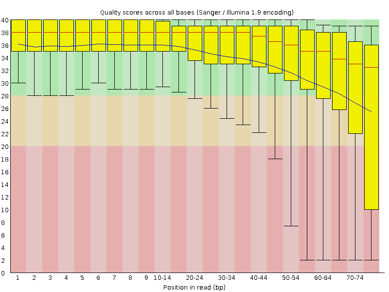
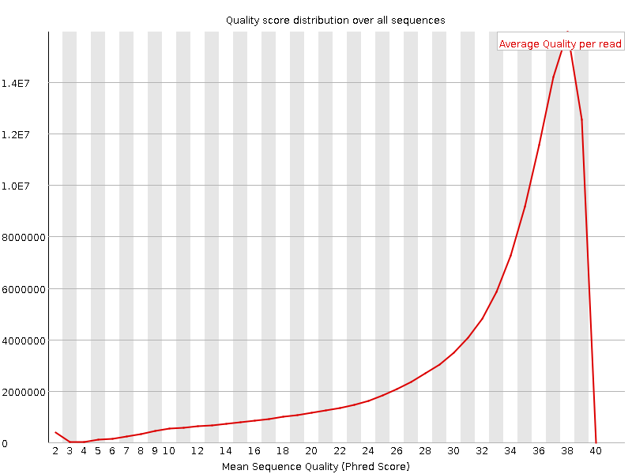
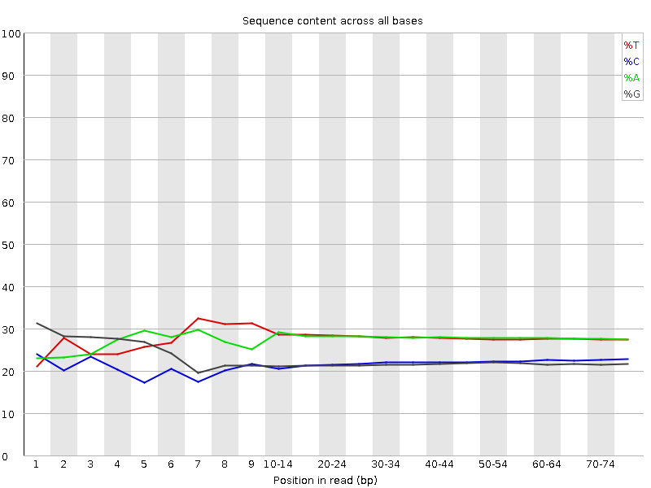
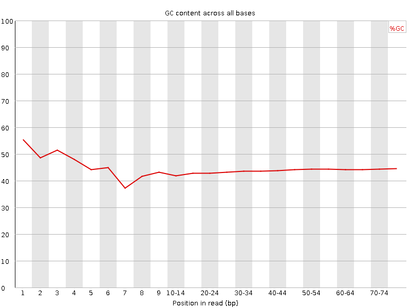
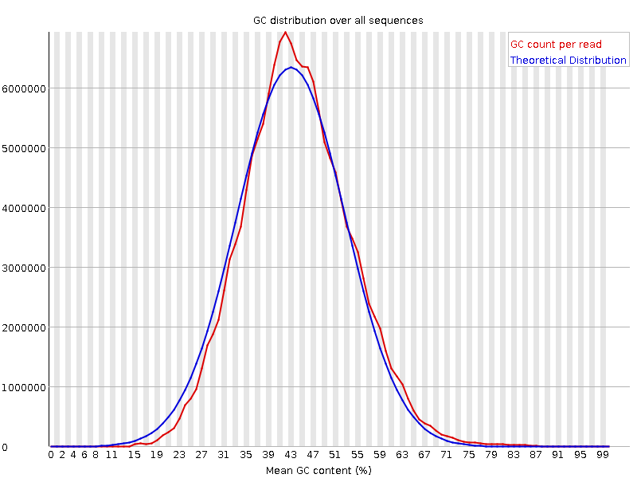
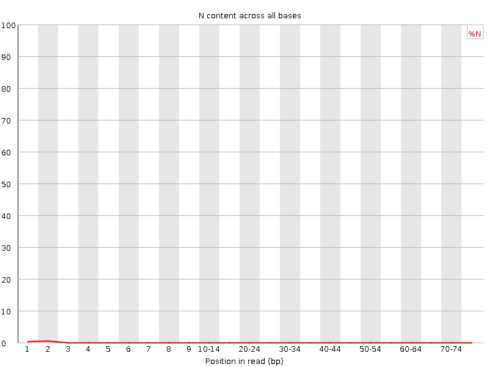
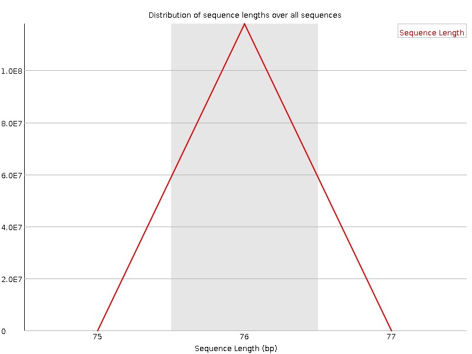
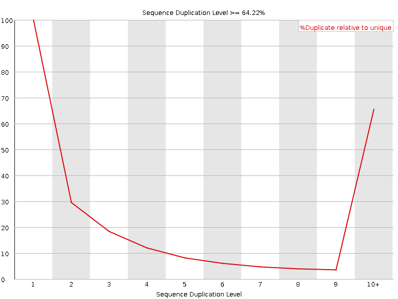
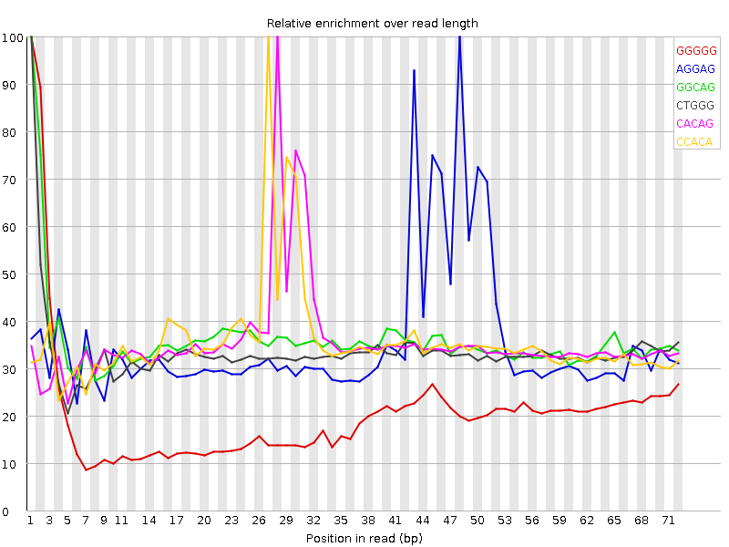

![[OK]](Icons/tick.png) Basic Statistics
Basic Statistics
| Measure | Value |
|---|---|
| Filename | SRR4235527.sra_1.fastq |
| File type | Conventional base calls |
| Encoding | Sanger / Illumina 1.9 |
| Total Sequences | 117876320 |
| Filtered Sequences | 0 |
| Sequence length | 76 |
| %GC | 44 |
Per base sequence quality

Per sequence quality scores

![[WARN]](Icons/warning.png) Per base sequence content
Per base sequence content

![[FAIL]](Icons/error.png) Per base GC content
Per base GC content

Per sequence GC content

Per base N content

Sequence Length Distribution

Sequence Duplication Levels

Overrepresented sequences
| Sequence | Count | Percentage | Possible Source |
|---|---|---|---|
| GTCGGCATGTATTAGCTCTAGAATTACCACAGTTATCCAAGTAGGAGAGG | 334109 | 0.28344030421037913 | No Hit |
| CCGTCGGCATGTATTAGCTCTAGAATTACCACAGTTATCCAAGTAGGAGA | 207173 | 0.17575455358633524 | No Hit |
| CCCGTCGGCATGTATTAGCTCTAGAATTACCACAGTTATCCAAGTAGGAG | 178754 | 0.15164538560416546 | No Hit |
Kmer Content

| Sequence | Count | Obs/Exp Overall | Obs/Exp Max | Max Obs/Exp Position |
|---|---|---|---|---|
| GGGGG | 13175000 | 2.9241385 | 14.329966 | 1 |
| AGGAG | 15415340 | 2.1464195 | 6.0244327 | 48 |
| GGCAG | 11938645 | 2.1147351 | 5.8941913 | 1 |
| CTGGG | 11833240 | 2.0959587 | 6.2513437 | 1 |
| CACAG | 14800740 | 2.0923672 | 5.847201 | 28 |
| CCACA | 14602260 | 2.0800369 | 5.8053207 | 27 |
| GGGGA | 10503100 | 1.8463836 | 8.431878 | 1 |
| GGGAG | 10453480 | 1.8376607 | 5.717727 | 1 |
| TGGGG | 10438180 | 1.8348787 | 6.017526 | 1 |
| GGAGA | 12892715 | 1.7951711 | 5.3152814 | 44 |
| GGGGC | 7625960 | 1.7054476 | 5.367292 | 2 |
| GAGGA | 12247930 | 1.705392 | 5.421627 | 47 |
| GGGTG | 9601110 | 1.6877341 | 5.390444 | 2 |
| GGGGT | 9500635 | 1.6700721 | 8.230866 | 2 |
| AGAGG | 11988935 | 1.6693298 | 5.26513 | 46 |
| GTGGG | 9334345 | 1.6408408 | 8.190566 | 1 |
| ACCAC | 10584585 | 1.5077343 | 5.2124805 | 26 |
| AGCTC | 10247225 | 1.4485681 | 5.077478 | 14 |
| GGCAT | 10288990 | 1.4434737 | 6.2359405 | 4 |
| CCAAG | 10208980 | 1.4432341 | 5.136585 | 37 |
| GAGAG | 10163615 | 1.4151736 | 5.0339713 | 45 |
| GCTCT | 9719915 | 1.3739573 | 5.076456 | 15 |
| CGGGG | 6062830 | 1.3558737 | 9.429221 | 1 |
| GCATG | 9580165 | 1.3440306 | 5.243395 | 5 |
| GGAGC | 7539380 | 1.3354774 | 5.923525 | 49 |
| GGGTT | 9022250 | 1.2561244 | 5.762707 | 3 |
| GAGCG | 4640330 | 0.82195836 | 6.0197377 | 54 |
| CGGCA | 4318525 | 0.77078426 | 5.954248 | 3 |
| TCGGC | 4074500 | 0.7271933 | 5.6176095 | 2 |
| GCGAG | 3396970 | 0.60171753 | 5.307707 | 52 |
| CGAGC | 3338080 | 0.5957913 | 5.2988715 | 53 |
| GTCGG | 3306935 | 0.58573973 | 6.2105036 | 1 |
| CGACC | 3174775 | 0.57096153 | 5.2362785 | 57 |
| GCGAC | 3169005 | 0.5656142 | 5.199014 | 56 |